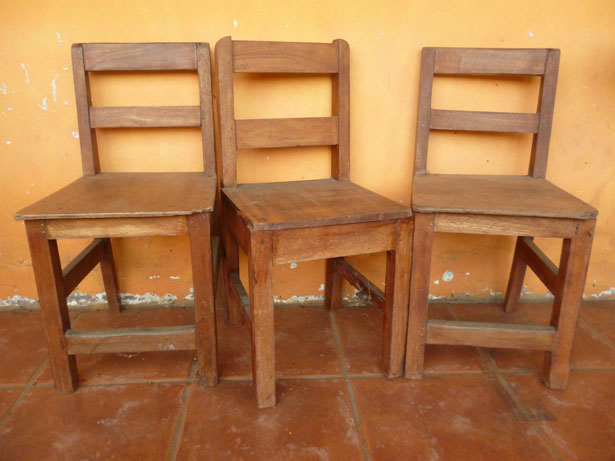

Chair Project
The instructions below are for one chair, but you easily can get seats (F) and slats (I, J, and K) for six chairs from a single sheet of 3/4" MDF. A full sheet of 3/4" MDF weighs about 100 pounds, so even if you have a van or pickup truck capable of hauling a full sheet, handling it can be a challenge. Have a Lowe's associate crosscut the sheet into five 18-1/2"-wide strips about 4' long (or one for each chair). Now you'll be able to load the material into just about any vehicle. The extra width allows you to trim away rough-cut edges on your tablesaw, and then crosscut the resulting 18"-wide panels into finished-size parts. If your fledgling workshop doesn't include a tablesaw, see Stretching Your Tool Dollars.
Even after trimming on your tablesaw, the cut edges of the MDF parts will show saw-blade marks. Sand the edges smooth using a random-orbit sander with an 80-grit disk. When painting, the edges of the parts soak up more paint than the faces and tend to dry rough and fuzzy. To seal the edges, mix equal amounts of water and wood glue and brush it generously onto the edges. With the glue solution dry, lightly re-sand the edges. Now you'll have smooth edges that take paint the same as the faces.
Tablesaw Substitute: If you don't have a tablesaw, you easily can trim the rough-cut panels to width and then crosscut panels into seats and slats with a portable circular saw and cutting guide. For good cut quality, fit your saw with a 40-tooth blade. The cutting guide can be as simple as a board with a good straight edge and a pair of clamps. Or invest in a Swanson Tool Co. straightedge cutting guide (#119887). This sturdy aluminum guide comes in two 50" sections that join together to allow you to rip the 8' length of a full sheet of MDF or plywood. To use a cutting guide, mark the cutline on your workpiece. Then measure the distance on your circular saw from the blade to the edge of the saw base. Offset the cutting guide the measured distance from the cutline, and clamp the guide to the workpiece. Then slide the saw base along the guide to make the cut.
Basic Stowable Workbench: You could build one of these chairs while squatting on the floor of your basement or garage, but if you're considering a set of four or more, give yourself a break and speed the process by setting up a simple workbench. You don't have to spend a lot of money. A pair of sawhorses and a 3/4×24×48" piece of MDF will do the trick. To keep the MDF from shifting around, capture the top rail of each sawhorse between a pair of 1x3 cleats screwed to the underside of the work top. Now you can simply lift the top off the horses for storage or when you need the horses for another job. Economical folding horses, such as the Task Force Twin Pack folding sawhorses (#161034) fold flat so your entire bench, horses and top, take up very little space when not in use.